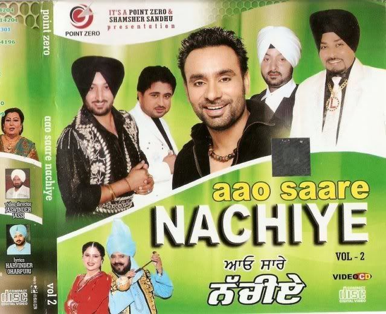

Hardy Sandhu
Pop Artist
Hardavinder Singh Sandhu is an Indian singer, actor and former cricketer.[2] His first song was Tequilla Shot, and he gained popularity with Soch (2013) and Joker (2014), which were written by Jaani and music composed by B Praak . Sandhu made his acting debut in Yaaran Da Katchup (2014).[3][4][5] His song "Soch" was remade for the 2016 Bollywood film Airlift.[6] His song "Naah" was remade for the film Bala as "Naah Goriye" with singer Swasti Mehul.[7] He is a notable alumnus of The British Co-Ed High school, Patiala.
247 Tracks | 128 Albums
01

Mittra di Chattri
Babbu Maan
02
Horn Blow
Hardy Sandhu
03
Ghar di Sharab
Gippy Grewal
04
G.O.A.T
Diljit Dosanjh
05
Judda
Amrinder Gill
06

I Lied
Tove Styrke
07

Desi Rockstar
Gippy Grewal